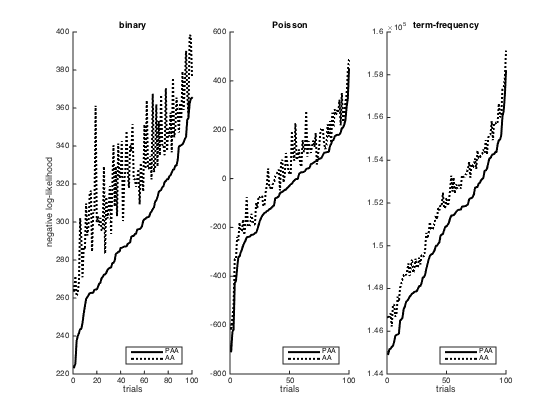

Plot negative log-likelihoods from compareProbVsDefault
Additional info: Figures 7 in article Probabilistic Archetypal Analysis by Seth and Eugster in Machine Learning Journal
Copyright Sohan Seth sohan.seth@hiit.fi
f2 = figure('papertype', 'a4', 'paperposition', [0 0 7 2]); for count = 1:3 switch count case 1 load compareProbVsDefault_Bernoulli case 2 load compareProbVsDefault_Poisson case 3 load compareProbVsDefault_stochastic end figure(f2); subplot(1, 3, count), hold on nllList = sortrows(nllList); plot(nllList(:, 1), 'k', 'linewidth', 2) plot(real(nllList(:, 2)), 'k:', 'linewidth', 2) legend('PAA', 'AA', 'location', 'southeast') % set(gca, 'xtick', ''); xlabel('trials') if count == 1; ylabel('negative log-likelihood'); end switch count case 1 title('binary') case 2 title('Poisson') case 3 title('term-frequency') end set(gca, 'fontsize', 8) end % saveas(f2, '../../Paper-NIPS-ICML-arXiv-KDD-ML/nll.eps', 'epsc')
close all